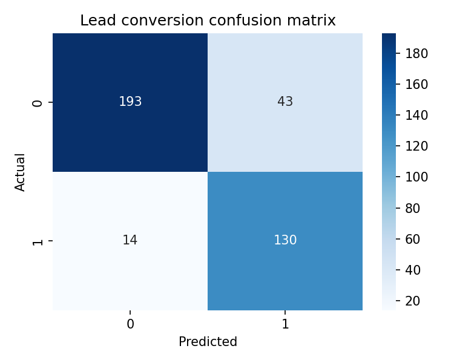

A1 Studio Project Poster Template
Cloud Computing + AI + Big Data Analytics and Data Visualization
Project: Lume AI — Big Data + ML Platform for Mutual-Fund Lead Intelligence
Team Members: _______________________
Enrollment Nos: _____________________
Guide/Mentor: _______________________
Third Year (Sem 6) · B.Tech CSE
Poster Rules: Rule of Thirds — 60% Visuals · 20% Text · 20% White space. Font sizes: Title 34–40pt; Headings 24–30pt; Body 16–20pt. Palette: Blue=Cloud, Orange=AI, Green=Big Data.
1. Introduction & Problem Statement
- Context / Domain: Indian mutual-fund distribution; CRM + market + fund documents
- Problem: Fragmented data + manual routing → low conversion, poor personalization
- Objectives:
- Objective 1 — Scalable ETL and unified feature store
- Objective 2 — Accurate lead scoring & persona routing
- Objective 3 — Serveable prototype with dashboard/API
flowchart LR
subgraph BDA["Big Data"]
A[Ingest CSV/JSON] --> B[PySpark ETL]
B --> C[(Parquet)]
end
subgraph AI["AI / ML"]
C --> D[RF leads]
C --> E[K-Means]
C --> F[LSTM]
C --> G[NLP]
end
subgraph DEP["Deploy"]
D --> H[FastAPI]
E --> H
F --> H
G --> H
H --> I[Streamlit]
H --> J[Docker]
I --> K[Tableau embed]
end
style BDA fill:#d4edda,stroke:#28a745
style AI fill:#ffd8bf,stroke:#fd7e14
style DEP fill:#d3e7ff,stroke:#0b63c6
2. Methodology & Prototype Implementation
- Tech stack: AWS/GCP | Hadoop/Spark | Python, PyTorch, scikit-learn
- Prototype steps: Ingest → Clean → Feature → Train → Serve → Dashboard
- Key algorithms/pipelines: RF/XGBoost, K-Means, LSTM, TF-IDF / SBERT
- Workflow / Pseudocode: See `src/master_pipeline.py` (`run_full_system()` orchestrator)
Cloud Mapping
- Storage: HDFS / S3 → Parquet
- Compute: Spark cluster / serverless ML endpoints
- API Gateway + CI/CD for deployment
4. Results & Validation
Accuracy: 85.00%
Precision: 0.75
Recall: 0.90
F1: 0.82
ROC-AUC: 0.933

Also show: processing latency, throughput, resource utilization (CPU/RAM) where available.
5. Prototype Output / Screenshots
- Screenshot 1: Streamlit dashboard (lead routing)
- Screenshot 2: API docs (`/docs`) and sample JSON request/response
- Screenshot 3: PCA cluster visualization / ROC curve
Place images in `model_evaluations/` or `dataset_visualisations/` and update `src` paths before exporting.
6. Conclusion & Future Scope
- Key outcomes validated: reproducible ETL, validated models, serving stack
- Scalability: Parquet + Spark → cloud storage; Docker + API for serving
- Future: streaming (Kafka), automated retraining, SHAP explainability, SBERT semantic retrieval